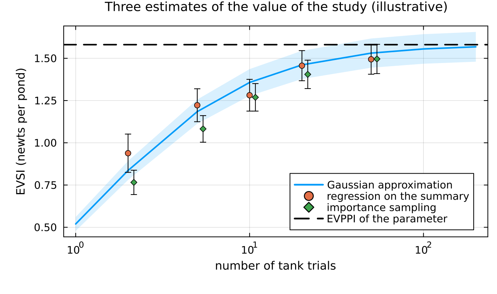

EVSI from a sample: what a study is worth
Simon Frost
- Motivation
- The problem
- Regression on a summary statistic
- Importance sampling
- The Gaussian approximation
- The three side by side
- The net benefit of sampling, in newts
- A check against closed forms
- What to take away
- Next
Motivation
The expected value of sample information (EVSI) is what the data of a proposed study are worth before they are seen. Experiments and the value of sample information computed it exactly for a finite experiment, a likelihood matrix over a few signals and states. With draws of continuous parameters and data that can take any value, the EVSI has to be estimated. DecisionAnalysis.jl has three estimators, chosen by how the study is described:
| study description | method | needs |
|---|---|---|
SummaryStatistics(table) | regression of the payoffs on summaries of simulated data (Strong et al. 2015) | one simulated data set per draw, reduced to a few numbers |
ImportanceSampling(loglik) | reweighting of the draws by the likelihood of simulated data (Menzies 2016) | a log-likelihood |
GaussianApproximation(focal; n0, n) | shrinkage of the fitted conditional means (Jalal and Alarid-Escudero 2018) | the prior effective sample size |
All three return a VOIEstimate, with the standard error beside the value.
All numbers are illustrative.
The problem
The pond of newts of the two previous vignettes, with no intervention as the baseline. The EVPPI vignette found that the transmission rate is the parameter worth learning. Here is a study that would inform it.
The study. Before the season, n tank trials are run. Each trial houses a few newts with an infected one and yields one noisy measurement of the log transmission rate, normally distributed around the true value with standard deviation 1. The study’s data reduce to the mean of the n measurements.
using DecisionAnalysis
using Random: Xoshiro, randn
include(joinpath("..", "_common.jl"))
include(joinpath("..", "_toy_pond.jl"))
draws = toy_draws(Xoshiro(13), 600)
draws = merge(draws, (; log_contact=log.(draws.contact)))
belief = SampleBelief(draws)
table = outcomes(ToyPond(), TOY_ACTIONS, belief; replicates=10, seed=2026)
problem = DecisionProblem(table, IndividualsUtility(:alive); baseline=:none)
ceiling = evppi(problem, :log_contact)
voi_table(["EVPPI of the transmission rate (the ceiling for this study)" => ceiling])| estimate | value | standard error | act-now bias | cell-noise bias |
|---|---|---|---|---|
| EVPPI of the transmission rate (the ceiling for this study) | 1.562 | 0.089 | 0 | - |
The model takes its parameters by name and ignores the extra log_contact column, which is there for the study. No study of the transmission rate can be worth more than learning it exactly.
Regression on a summary statistic
For every draw, simulate the study once under that draw’s parameters and keep its summary, here the mean of n measurements. Then ask what learning the summary is worth. That is an EVPPI with the summary in place of the parameter, so the same regression machinery applies.
sigma = 1.0
rng = Xoshiro(2)
summary_of(n) = draws.log_contact .+ sigma / sqrt(n) .* randn(rng, length(belief))
by_regression = [n => evsi(problem, SummaryStatistics((; mean_measurement=summary_of(n))))
for n in (2, 5, 10, 20, 50)]
voi_table(["n = $n trials" => e for (n, e) in by_regression])| estimate | value | standard error | act-now bias | cell-noise bias |
|---|---|---|---|---|
| n = 2 trials | 0.937 | 0.113 | 0 | - |
| n = 5 trials | 1.222 | 0.097 | 0 | - |
| n = 10 trials | 1.306 | 0.094 | 0 | - |
| n = 20 trials | 1.416 | 0.089 | 0 | - |
| n = 50 trials | 1.497 | 0.087 | 0 | - |
The summary must carry what the data say about the parameter, and there must be few of them: the built-in regression suits up to about four.
Importance sampling
When the data do not reduce to a few numbers, a log-likelihood is enough. For each simulated data set the draws are reweighted by their likelihood, which gives the posterior expected payoff of every action with no refitting.
importance_loglikelihoods builds the matrix from two functions of the model: one that simulates a data set from a draw, and one that gives the log-likelihood of a data set under a draw.
function importance_evsi(n)
study = importance_loglikelihoods((rng, θ) -> θ.log_contact + sigma / sqrt(n) * randn(rng),
(y, θ) -> -n * (y - θ.log_contact)^2 / (2 * sigma^2),
belief; seed=3)
return evsi(problem, study)
end
by_importance = [n => importance_evsi(n) for n in (2, 5, 10, 20, 50)]
md_table(["trials", "EVSI", "standard error", "from the data sets", "from the draws",
"median effective sample size", "smallest"],
[[n, Float64(e.value), e.standard_error, e.details.datasets_standard_error,
e.details.draws_standard_error, e.details.median_ess, e.details.minimum_ess]
for (n, e) in by_importance]; digits=3)| trials | EVSI | standard error | from the data sets | from the draws | median effective sample size | smallest |
|---|---|---|---|---|---|---|
| 2 | 0.766 | 0.072 | 0.048 | 0.054 | 455.462 | 26.687 |
| 5 | 1.082 | 0.079 | 0.057 | 0.054 | 351.902 | 9.557 |
| 10 | 1.269 | 0.081 | 0.061 | 0.054 | 272.467 | 4.816 |
| 20 | 1.405 | 0.084 | 0.062 | 0.057 | 203.228 | 1.735 |
| 50 | 1.496 | 0.087 | 0.063 | 0.06 | 135.554 | 1.032 |
The effective sample sizes are part of the estimate and are printed with it:
last(by_importance[3])VOIEstimate(evsi by ImportanceSampling: 1.26897 ± 0.0814613 (standard error); act-now bias 0.0; posterior effective sample size: median 272.467, smallest 4.81618 of 600 draws)The effective sample size is the diagnostic to watch. The more informative the data, the fewer draws carry the posterior weight. When it falls to a handful, the “posterior mean” is the payoff at one or two draws, noise and all, and the estimate drifts upwards towards the plain EVPI. Here the median is comfortable throughout, while the smallest, for data sets far in the tail, falls to one or two draws for the larger studies.
The estimate has two sources of Monte Carlo error, and its standard error combines them. One is the finite number of simulated data sets. The other is the finite number of draws: each posterior mean is a weighted average over the draws, and its error is carried through to the estimate by the delta method. The two parts are in the table. Here there is one data set per draw and the two parts are of similar size, so leaving either out would understate the error by about a quarter. The combined standard error is comparable with those of the other two methods. It is a first-order calculation, so when the effective sample size is small it understates the error and says nothing about the upward drift.
The Gaussian approximation
The third method needs no simulated data at all. The conditional means given the focal parameter are fitted once, as for EVPPI, and shrunk towards their mean by √(n / (n₀ + n)), which approximates how far a study of size n can move them. n₀ is the prior effective sample size: the number of observations the prior is worth. For a normal prior with variance τ² and observations with variance σ², n₀ = σ²/τ².
The prior on the log transmission rate is normal with standard deviation 0.7 (see toy_draws), so n₀ = 1 / 0.49.
n0 = sigma^2 / 0.7^2
sizes = [1, 2, 5, 10, 20, 50, 100, 200]
curve = evsi(problem, GaussianApproximation(:log_contact; n0, n=sizes))
md_table(["trials", "EVSI", "standard error"],
[[n, Float64(e.value), e.standard_error] for (n, e) in zip(sizes, curve)]; digits=3)| trials | EVSI | standard error |
|---|---|---|
| 1 | 0.506 | 0.041 |
| 2 | 0.821 | 0.056 |
| 5 | 1.167 | 0.072 |
| 10 | 1.339 | 0.079 |
| 20 | 1.443 | 0.083 |
| 50 | 1.512 | 0.086 |
| 100 | 1.536 | 0.088 |
| 200 | 1.549 | 0.088 |
One fit gives the whole curve. It rises from zero to the EVPPI of the parameter.
The three side by side
plt = Plots.plot(; xlabel="number of tank trials", ylabel="EVSI (newts per pond)", xscale=:log10,
title="Three estimates of the value of the study (illustrative)",
legend=:bottomright)
Plots.plot!(plt, sizes, [Float64(e.value) for e in curve]; label="Gaussian approximation",
ribbon=[e.standard_error for e in curve], fillalpha=0.15)
Plots.scatter!(plt, first.(by_regression), [Float64(e.value) for (_, e) in by_regression];
yerror=[e.standard_error for (_, e) in by_regression],
label="regression on the summary")
Plots.scatter!(plt, first.(by_importance) .* 1.08, [Float64(e.value) for (_, e) in by_importance];
yerror=[e.standard_error for (_, e) in by_importance], label="importance sampling",
markershape=:diamond)
Plots.hline!(plt, [Float64(ceiling.value)]; label="EVPPI of the parameter", linestyle=:dash,
color=:black)
png_figure(plt)
The three agree to within about two standard errors. They are different estimators, so they need not respect EVSI ≤ EVPPI to the last digit; the definition does, and they do up to Monte Carlo error.
Which to use (after Kunst et al. 2020):
- a few sufficient summaries: regression;
- a likelihood but no small summary: importance sampling, watching the effective sample size;
- a curve over the sample size from one fit, for a study that measures a parameter more or less directly: the Gaussian approximation.
The net benefit of sampling, in newts
A study is worth doing when its value exceeds its cost. There are no monetary costs in this package. Here the cost is in the same currency as the payoff: each tank trial uses three newts taken from the wild, which are not returned.
enbs is defined only for additive payoffs: the cost must be in the payoff’s units and must lower every payoff by the same amount whatever is done and whatever is true. That holds here if the result serves several ponds and the animals for the trials come from elsewhere in the population. Suppose the result guides the decision at 25 ponds.
ponds = 25
newts_per_trial = 3
net = [enbs(e; cost=newts_per_trial * n, population=ponds) for (n, e) in zip(sizes, curve)]
md_table(["trials", "EVSI × ponds", "cost (newts)", "net benefit (newts)", "standard error"],
[[n, ponds * Float64(e.value), newts_per_trial * n, b.value, b.standard_error]
for (n, e, b) in zip(sizes, curve, net)])| trials | EVSI × ponds | cost (newts) | net benefit (newts) | standard error |
|---|---|---|---|---|
| 1 | 12.64 | 3 | 9.64 | 1.02 |
| 2 | 20.52 | 6 | 14.52 | 1.41 |
| 5 | 29.18 | 15 | 14.18 | 1.79 |
| 10 | 33.48 | 30 | 3.48 | 1.97 |
| 20 | 36.06 | 60 | -23.94 | 2.09 |
| 50 | 37.8 | 150 | -112.2 | 2.16 |
| 100 | 38.41 | 300 | -261.59 | 2.19 |
| 200 | 38.72 | 600 | -561.28 | 2.2 |
best = argmax([b.value for b in net])
(trials=sizes[best], net_benefit=net[best].value, standard_error=net[best].standard_error)(trials = 2, net_benefit = 14.516561494296681, standard_error = 1.4058393085980168)A small study pays for itself and a large one does not: the EVSI curve flattens while the cost keeps rising. With a single pond no study is worth its newts.
optimal_design makes the same comparison in one call, over a list of candidate studies or, as here, the sample sizes of one study, with the cost a function of the size:
design = optimal_design(problem, GaussianApproximation(:log_contact; n0, n=sizes);
costs=n -> newts_per_trial * n, population=ponds)
(best=design.best, criterion=design.criterion)(best = Symbol("n = 2"), criterion = :net_benefit)The best size is picked from estimates, so its net benefit is on average a little flattering, and sizes whose net benefits differ by less than their standard errors are not distinguished.
[round(enbs(e; cost=newts_per_trial * n, population=1).value; digits=2)
for (n, e) in zip(sizes, curve)]8-element Vector{Float64}:
-2.49
-5.18
-13.83
-28.66
-58.56
-148.49
-298.46
-598.45A check against closed forms
In the normal model used as a check in the previous vignette (payoffs 0 and p₁ − p₂, p₁ ~ N(1, 1), p₂ ~ N(0, 2²)), a study of m observations of p₁ with standard deviation 1 has a closed-form EVSI: the preposterior mean of p₁ is normal with variance m / (m + 1), which gives 0.0723251 for m = 10 and 0.0821176 for m = 100. The prior effective sample size is
rng = Xoshiro(20261123)
n = 40_000
p1, p2 = 1 .+ randn(rng, n), 2 .* randn(rng, n)
normal = DecisionProblem(PayoffTable(permutedims(hcat(zeros(n), p1 .- p2));
actions=[:reference, :new]),
SampleBelief((; p1, p2)); baseline=:reference)
small = DecisionProblem(PayoffTable(normal.payoff.Q[:, 1:3000]; actions=[:reference, :new]),
SampleBelief((; p1=p1[1:3000], p2=p2[1:3000])); baseline=:reference)
rows = Pair{String,VOIEstimate}[]
for m in (10, 100)
xbar = p1 .+ randn(rng, n) ./ sqrt(m)
push!(rows, "m = $m, regression on the sample mean" => evsi(normal, SummaryStatistics((; xbar))))
push!(rows, "m = $m, Gaussian approximation" =>
evsi(normal, GaussianApproximation(:p1; n0=1, n=m)))
study = importance_loglikelihoods((rng, θ) -> θ.p1 + randn(rng) / sqrt(m),
(x, θ) -> -m * (x - θ.p1)^2 / 2, small.belief;
datasets=800, seed=9)
push!(rows, "m = $m, importance sampling (3,000 draws)" => evsi(small, study))
end
voi_table(rows; digits=4, truth=[0.0723251, 0.0723251, 0.0723251, 0.0821176, 0.0821176, 0.0821176])| estimate | value | standard error | act-now bias | cell-noise bias | reference |
|---|---|---|---|---|---|
| m = 10, regression on the sample mean | 0.0801 | 0.0042 | 0 | - | 0.0723 |
| m = 10, Gaussian approximation | 0.0796 | 0.004 | 0 | - | 0.0723 |
| m = 10, importance sampling (3,000 draws) | 0.0759 | 0.0137 | 0 | - | 0.0723 |
| m = 100, regression on the sample mean | 0.0892 | 0.0044 | 0 | - | 0.0821 |
| m = 100, Gaussian approximation | 0.0902 | 0.0043 | 0 | - | 0.0821 |
| m = 100, importance sampling (3,000 draws) | 0.0903 | 0.0169 | 0 | - | 0.0821 |
What to take away
evsi(problem, study)estimates the value of a study from a sample. The study object fixes the method:SummaryStatistics,ImportanceSamplingorGaussianApproximation.- Regression on summaries is EVPPI with the summary in place of the parameter.
- Importance sampling needs only a log-likelihood. Its effective sample size is reported with the estimate: when it is small the estimate drifts towards the EVPI. Its standard error covers both the simulated data sets and the draws.
optimal_designcompares candidate studies or sample sizes by EVSI, or by net benefit in animals where payoffs are additive.- The Gaussian approximation gives a curve over sample size from one fit and the prior effective sample size.
- No study of a parameter is worth more than its EVPPI.
enbs(estimate; cost, population)is for additive payoffs only, with the cost in animals.
Next
Bd epizootic response puts all of this to work on a published model of chytridiomycosis in a frog population.